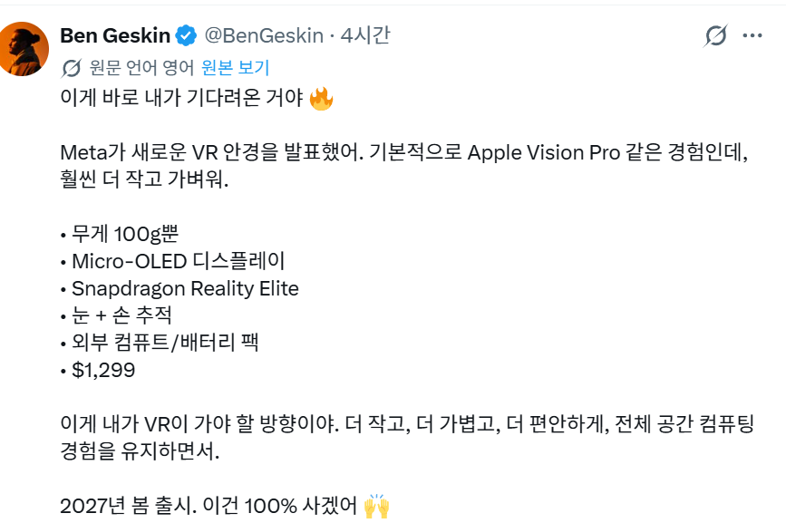

메타가 이쪽에 진심이긴 하네
회사 이름 바꿧을때부터...
닉값은 해야제ㅋㅋㅋ
눈만 딱 가리는 방식이던데 좋더라. 우동볼생각에 벌써 설렌다
뇌에 야동사리밖에 없지?
인간은 어쩔수음서
저크기에 저정도 성능이 가능하다고?
이제 이걸로 야동 보면 되는거야?
기존 메타 vr 급임?
이건 쫌 땡기네... 예구되나?
와 사고싶다. 근데 가격이 기존VR보다 확 올랐네. 180만원...
오큘러스 먹고 신제품 꾸준히 내는거 보면 vr은 걍 얘들이 짜세인듯
오큘러스 초창기 부터 지금 퀘스트3 까지 다 샀었는데
이걸로 이제 넘어가야겠다
시야각 좁다고 말 나오는 것 같던데 ㄷㄷ
그래 머리에 컴퓨터 올리고 쓰는건 좀 무리지 ㅋㅋ
케이블이 일체형이네
야동발사대
Im ready
딱 예상한것처럼 되고 있네. 글래스가 계속 가벼워져도 배터리는 어쩔 수가 없어서 외부로 뺄거고 어쩌면 컴퓨팅 연산장치도 외부로 뺄 수 있다 했을 때 개병신취급 당했었는데 속이 시원하다. 뭐 잘팔려야 내말이 맞게 되는거긴하지만...
국내 출시가 180 정도 할려나
와 저정도 사이즈면 할만 한데
현실 = 충전기 꽃아두면서 쓰는게 일상
어차피 딸 칠때 잠깐 쓸거라 ㄱㅊ
와 ㅋㅋㅋㅋ
경량화 성공한건가??
배터리 문제 어케 해결한거래
영상보면 연결되는 장비가 1개 나옴
다 외부 공급
안경은 울어
역시 안경과 연결된 장치가 있어야 결국 안경이 가벼워지지
게임됨? 그게 젤 중요함
저거 렌즈 넣을수있을란가
호... 좋은데?
왔다 내 혁신